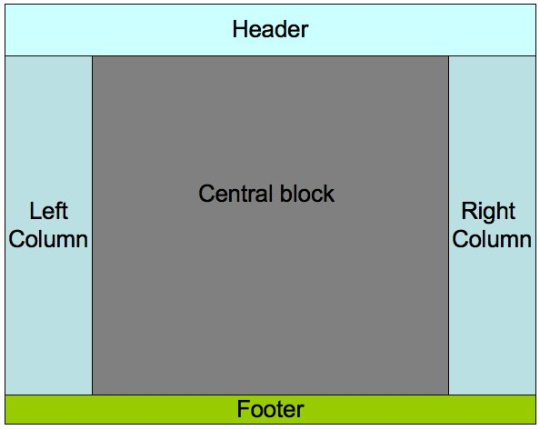
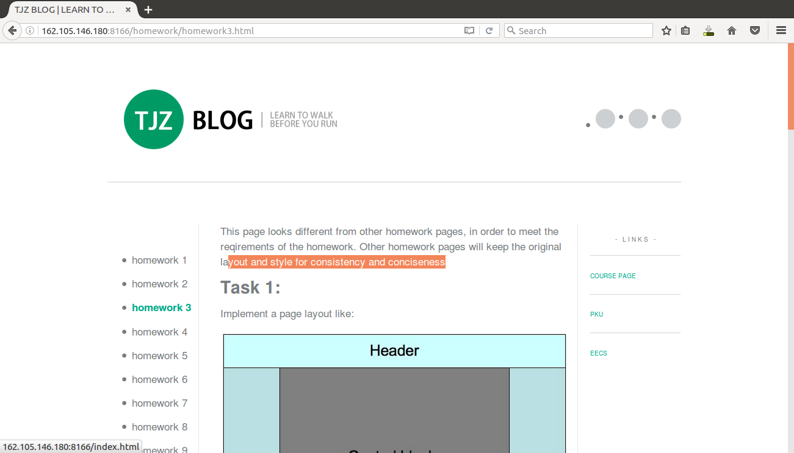
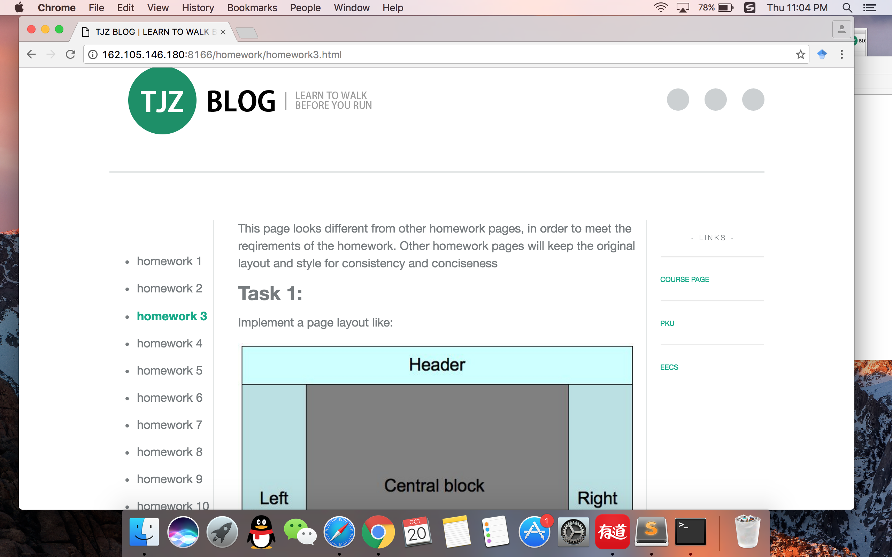
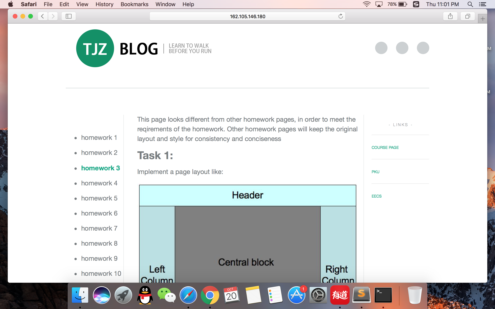
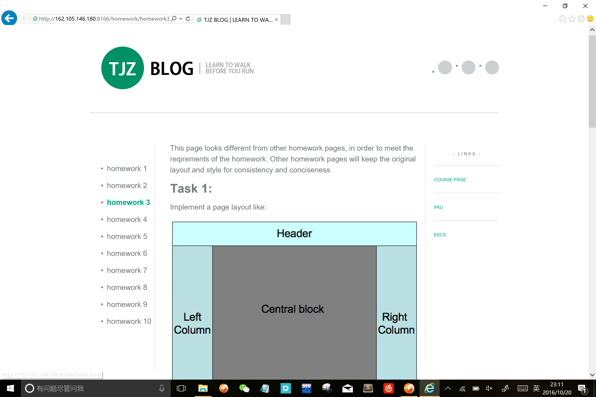
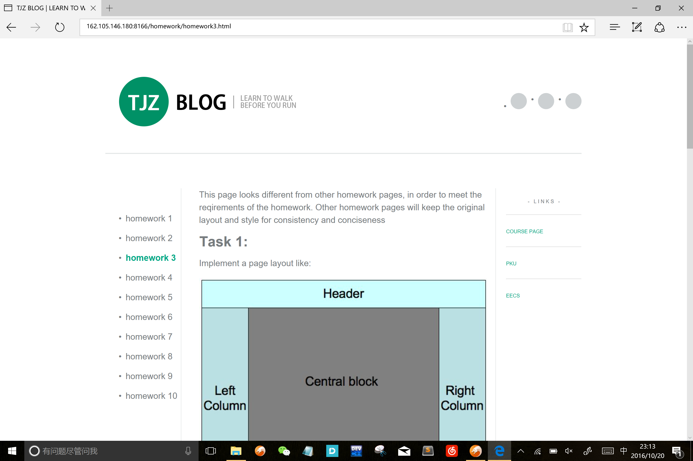

This page looks different from other homework pages, in order to meet the reqirements of the homework. Other homework pages will keep the original layout and style for consistency and conciseness.
Task 1:
Implement a page layout like:
Use CSS and DIV.
- The left column and the right column must be of the same width, which could be fixed.
- The right column always floats to the right.
- The left column and the right column must be of the same height no matter what do they contain.
- Inline style, Internal style sheet and External style sheet must all be used in the homework.
Your performance of designing the layout will be evaluated in Firefox 3.5. However, you are encouraged to test your layout in as many browsers as possible. You will receive a bonus if you design layout that has the same appearance in IE6, IE7+, Opera, Safari, etc. and mention this effort in your homework. Remember Maxthon, Sogou and Tencent Traveler are not considered as individual browsers, for they are only shell of IE. Also, try to pass both the W3C Markup Validation and the W3C CSS Validation, then place "valid" icon(s) on your web pages. The icons can be found on the page showing you passed validation.
Already done in this page. You can find the inline style in class "homework".
And the layout of this page remains the same in several browser:
Firefox 49:
Chrome:
Safari:
IE 11:
Edge:
Task 2:
Implement a little "Questionare" using Perl. Information to be collected include:
- Name.
- Age.
- Gender.
- E_mail address.
In addition to the Submit button, a Query button is provided for the user to see all data items have been collected. User should also be able to delete selected Items.
Tips:
- Three CGI program are needed, one to collect data items, one to list items, the other to delete selected items.
- To delete items, for convenience, a check box could be provide to each data item being listed. After user click "delete", all checked items are deleted.
- Error check for the input data is not required.
- To prevent simultaneous accesses to a single file, "flock" function is used. please refer to the Survey example in the text book.
- In order to be run, the CGI program file should has a file mode of 711, which says it can be executed by any user.
- Put the CGI program in the directory of "cgi-bin" under you Server root Directory.
- The file which saves the collected data should be created first and should be writable for other users. A file mode 666 is needed.
- The error.log file in the directory of "logs" will help you to debug your CGI program in case of error.
You are encouraged to improve this questionaire in some way. For example, you could use AJAX to update the information without refreshing the page, write three versions of this questionaire in Perl, C CGI and Shell CGI, or make pages produced by CGI pass W3C validations. Any efforts made should be listed in your pages as they deserve a reward.
Click here to get the Questionare.